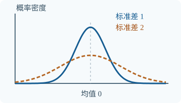

第4章 随机变量的数字特征
完整分布能描述随机变量的全部概率规律；期望、方差和相关系数则从几个角度概括它。概括会丢失信息，因此这些数字不能代替完整分布。
依据：王丽主编《概率论与数理统计》，科学出版社，2026年第一版，第4章纸70—88正文已目视核对，教材算例与新编例分别标明。计算为独立整理，未与出版社答案逐题核对。
4.1 数学期望
教材习题：第四章课后题逐题讲解，包含解题条件和关键步骤。
4.1.1 随机变量的数学期望
期望是按概率加权的平均值，可以理解为大量相同条件下重复观察时的长期平均位置；它不一定是实际可能取到的数。例如公平骰子的期望是3.5，但一次不可能掷出3.5。
连续：E(X)=∫−∞∞x f(x)dx
离散情形中，每个值乘上对应概率再相加；连续情形使用密度积分。无限求和或积分需满足绝对收敛等存在条件，并非每个分布都有有限期望。期望的单位与 X 相同。
某次售货利润 X 可能为 −10元、0元、20元，概率分别为0.2、0.3、0.5。求平均利润。
把每种利润乘以其发生概率，再相加：E(X)=−10×0.2+0×0.3+20×0.5。
答案：E(X)=8元。
8元不是单次一定得到的利润，它是这个模型的概率加权平均。
有限期望的条件
有限期望要求Σ|xᵢ|pᵢ<∞或∫|x|f(x)dx<∞。这保证正负部分可以相加且不依赖求和次序；仅把对称区间的正负积分抵消，不能证明期望存在。非负变量也可以有无限期望，但不属于这里使用有限数值性质的范围。
0—1变量直接得E(X)=0(1−p)+1p=p。二项变量的k=0项为0，利用kC(n,k)=nC(n−1,k−1)，其余求和变成npΣC(n−1,j)pʲ(1−p)ⁿ⁻¹⁻ʲ=np；p=0、1或n=0可直接按常量计算。
泊松分布利用k/k!=1/(k−1)!，E(X)=λe⁻λΣⱼ≥₀λʲ/j!=λ。均匀分布直接积分∫ₐᵇx/(b−a)dx=(a+b)/2。正态令z=(x−μ)/σ，E(X)=∫(μ+σz)φ(z)dz；常数项为μ，奇函数项积分0，故均值μ。
4.1.2 随机变量函数的期望
求 Y=g(X) 的期望时，不一定先求 Y 的分布。只要期望存在，可直接用原变量的分布加权：
二维变量同理，E[g(X,Y)] 为联合概率加权和或对联合密度的二重积分；要使用联合分布，不可无条件拆成边缘分布相乘。
X 等概率取 −1、0、1，求 E(X²) 和 [E(X)]²。
E(X)=(-1+0+1)/3=0；E(X²)=(1+0+1)/3。
答案：E(X²)=2/3，而 [E(X)]²=0。
先平方再平均与先平均再平方一般不同。
对可测g，若E|g(X)|有限，则E[g(X)]=Σg(xᵢ)pᵢ或∫g(x)f(x)dx。这个公式直接用原分布加权，不需要先求g(X)的分布。二维时须用联合分布：E[g(X,Y)]=ΣᵢΣⱼg(xᵢ,yⱼ)pᵢⱼ或∬g(x,y)f(x,y)dxdy。
例4.6：X取−1、0、2、3，概率1/8、1/4、A、1/4。归一得A=3/8；E(X)=−1/8+6/8+3/4=11/8；E(X²)=1/8+12/8+9/4=31/8；E(−2X+1)=−2×11/8+1=−7/4。
例4.7：泊松的平方拆成X(X−1)+X，前一项利用k(k−1)/k!=1/(k−2)!，期望λ²；所以E(X²)=λ²+λ。例4.8：X均匀分布于(0,2π)，E(sinX)=(1/2π)∫₀²πsinx dx=0；不用先推sinX的分布。
例4.9的独立标准正态半径R=√(X²+Y²)，极坐标面积元为r dr dθ，E(R)=∫₀∞r²e−r²/2dr。分部积分取u=r、dv=re−r²/2dr，边界项0，留下∫₀∞e−r²/2dr=√(π/2)。
例4.10：密度6xy，0<x<1、0<y<2(1−x)。先积y，E(X)=∫₀¹12x²(1−x)²dx=12(1/3−1/2+1/5)=2/5；E(XY)=∫₀¹16x²(1−x)³dx=16(1/3−3/4+3/5−1/6)=4/15。把三角形误改为矩形会改变分布。
4.1.3 数学期望的性质
期望存在时 E(aX+bY+c)=aE(X)+bE(Y)+c。这叫线性性质，不要求独立。若 X、Y 独立且各自有有限期望，则有 E(XY)=E(X)E(Y)；反过来仅凭这一个等式不能断言独立。
常见结果：0-1分布 E(X)=p；二项分布 B(n,p) 的期望为 np；泊松分布 P(λ) 为 λ；均匀分布 U(a,b) 为 (a+b)/2；正态分布 N(μ,σ²) 为 μ；指数分布 E(λ) 为1/λ。二项公式可以把成功次数写成 n 个0-1变量之和，再利用线性性质得到。
三台设备今天发生故障的概率分别是0.1、0.2、0.3。求故障设备数的期望，是否需要独立？
令 Xᵢ=1 表示第 i 台故障，否则为0。总数 X=X₁+X₂+X₃；每个 E(Xᵢ) 等于各自故障概率。
答案：E(X)=0.1+0.2+0.3=0.6台，不需要独立。
这是长期平均台数，不意味着某天恰好有0.6台故障。
教材例4.11。 二项次数写成n个0—1指标之和，每项期望p，故总期望np。求和用期望的线性性质。若要认定总次数服从二项分布，还须有各次试验独立。
线性性质的理由：把(xᵢ+yⱼ)pᵢⱼ拆开求和，第一项沿j求和变成xᵢpᵢ·，第二项沿i求和变成yⱼp·ⱼ，所以无需独立。乘积可拆则需联合分布可分解。
10人各在楼上的32层中选择一层下电梯，有人下才停。记Iᵢ为第i层是否停车的指示变量，总停车次数X=I₁+⋯+I₃₂，因此E(X)=ΣE(Iᵢ)。这个相加步骤不要求各层的停车指标独立。
如果另外假设每个人独立地从32层等概率选一层，对固定第i层，每人都不在此层下的概率为(31/32)¹⁰，所以E(Iᵢ)=P(Iᵢ=1)=1−(31/32)¹⁰。
教材只明确各人选择各层的可能性相同，没有明确写不同人的选择相互独立。仅凭各人的边缘概率，不能唯一确定答案：例如所有人约好在同一随机楼层下，且该楼层在32层中等可能，则每人每层的概率仍为1/32，但电梯只停1次。因此8.704763是明确补充独立选择后的结果。
检查：至少停1次、至多停10次，结果位于这个范围内。把“乘客选楼层独立”与“不同楼层的停车事件独立”混为一谈，会误解公式的适用条件。
新编自测：骰子与线性期望
公平骰子E(X)=21/6=3.5，E(X²)=91/6，而[E(X)]²=49/4。若EX=2、EY=−1，E(3X−2Y+4)=12，不必独立。若X取0、1、2的概率1/4、1/2、1/4，则EX=1、EX²=3/2；Y=3X+2时EY=5。
4.2 方差
4.2.1 随机变量的方差
两个分布的期望可能相同，但一个结果集中、另一个波动很大。方差衡量与期望的平均平方偏离，教材记 D(X)，也常记 Var(X)。若 μ=E(X)，则：
推导：展开平方 X²−2μX+μ²，取期望后利用 E(X)=μ，得到 E(X²)−2μ²+μ²。平方使正负偏差不抵消；方差单位是原单位的平方，标准差 σ=√D(X) 的单位与原变量相同。方差等于0表示 X 以概率1取常数。

甲每次固定得到5元；乙以相同概率得到0元或10元。比较期望和方差。
甲的期望为5、离均差恒为0；乙的期望为 (0+10)/2=5，E(乙²)=(0²+10²)/2=50。
答案：两者期望都是5元；甲方差为0，乙方差为50−25=25元²，乙的标准差为5元。
4.2.2 常见分布的方差
0-1分布的方差 p(1−p)；B(n,p) 为 np(1−p)；P(λ) 为 λ；U(a,b) 为 (b−a)²/12；E(λ) 为1/λ²；N(μ,σ²) 的方差就是 σ²。二项结果需要各次试验相互独立。
教材例4.13—4.17的方差推导
方差有限时二阶矩有限，反过来二阶矩有限也保证一阶绝对可积。E[(X−μ)²]=E(X²)−2μE(X)+μ²，μ是常数，故得E(X²)−μ²。不能把E(X²)写成[E(X)]²。
例4.13的0—1变量满足X²=X，故D=p−p²。例4.14泊松用前面E(X²)=λ²+λ减λ²，得λ。例4.15均匀分布E(X²)=(a²+ab+b²)/3，减(a+b)²/4，通分得(b−a)²/12。例4.16正态标准化后D=σ²∫z²φ(z)dz=σ²；分部积分用φ′=−zφ，∫z²φ=−[zφ]+∫φ=1。
例4.17几何分布从1起，0<p≤1，q=1−p。对Σqᵏ=1/(1−q)求导，Σkqᵏ⁻¹=1/(1−q)²；再求导得Σk(k−1)qᵏ⁻²=2/(1−q)³。因此EX=1/p，E[X(X−1)]=2q/p²，EX²=(2−p)/p²，D=q/p²。p=0没有有限首次成功序号，不能代入。
4.2.3 方差的性质
D(X±Y)=D(X)+D(Y)±2Cov(X,Y)
加常数只平移，不改变波动；乘 a 后偏差也乘 a，平方后成为 a²。若 X、Y 独立且方差存在，协方差为0，因而和或差的方差都等于各方差之和。没有独立或不相关条件时，不能漏掉协方差项。
X、Y 独立，D(X)=4，D(Y)=9。求 D(2X−Y+3)。
常数3不影响方差；由于独立，交叉协方差为0。
答案：D(2X−Y+3)=2²×4+(−1)²×9=25。
例4.18二项次数写成独立0—1指标之和，D(X)=Σp(1−p)=np(1−p)。例4.19：只要0<D(X)<∞，Z=(X−EX)/√D(X)就有EZ=0、DZ=1；标准化本身不会把任意分布变成正态。
D(X)=0为何代表几乎处处常量？令W=(X−EX)²≥0，若EW=0，则P(W≥1/n)≤nEW=0；{W>0}是这些事件的可列并，故概率0。因此X=EX以概率1成立，不要求每一个概率0的样本点上也相等。
新编复习：骰子、平移与缩放
骰子D(X)=91/6−49/4=35/12，标准差约1.708。D(−2X+5)=4D(X)，加5不改变偏差，负号经平方消失。若DX=3，结果12；若DX=4，D(2X+3)=16。上述0、1、2分布方差1/2，Y=3X+2时方差9/2。
4.3 协方差与相关系数
4.3.1 协方差
协方差衡量两个变量偏离各自均值时是否倾向同向变化。若高于各自均值时常同时出现，乘积偏正；一高一低常同时出现，乘积偏负。
=E(XY)−E(X)E(Y)
前提是相关期望存在。协方差的单位是 X 的单位乘以 Y 的单位，因此单看数值大小不便比较不同量纲的数据。展开定义可得 D(X+Y)=D(X)+D(Y)+2Cov(X,Y)。
(X,Y) 等概率取 (0,0)、(1,1)，求 Cov(X,Y)。
E(X)=E(Y)=1/2，E(XY)=(0+1)/2=1/2。
答案：Cov(X,Y)=1/2−1/4=1/4。
这里两者总是相等，所以同向变化，协方差为正。
4.3.2 相关系数
若两个方差都有限且大于0，相关系数定义为 ρ=Cov(X,Y)/[√D(X)√D(Y)]，没有单位，−1≤ρ≤1。正负表示线性变化方向，绝对值越接近1，线性关系越强。ρ=0 称不相关，只说明没有线性相关，并不保证没有非线性关系。
独立且方差有限会推出不相关；反过来一般不成立。特殊地，若 (X,Y) 服从二维正态分布，则不相关与独立等价。|ρ|=1 意味着存在概率1成立的非退化线性关系；正负号对应斜率方向。相关不自动说明因果。
X 等概率取 −1、0、1，令 Y=X²。判断它们是否不相关及独立。
E(X)=0，E(Y)=2/3，E(XY)=E(X³)=(-1+0+1)/3=0，所以协方差为0。另一方面，知道 X=0 时 Y 必为0，但 P(Y=0)=1/3，条件信息改变了 Y 的概率。
答案：不相关，但不独立。
非线性关系 Y=X² 清楚说明“相关系数为0”不是“没有任何关系”。
已知 D(X)=4、D(Y)=9、Cov(X,Y)=3，求相关系数及 D(X+Y)。
标准差分别为2和3；和的方差需加两倍协方差。
答案：ρ=3/(2×3)=0.5；D(X+Y)=4+9+2×3=19。
ρ在−1到1之间，方差非负，计算结果合理。
教材例4.20—4.23：相关性的计算与结论范围
协方差具有对称性与双线性：Cov(aX+b,cY+d)=acCov(X,Y)，常数偏移项消失。因此D(aX+bY)=a²DX+b²DY+2abCov(X,Y)。有限二阶矩保证这些乘积可积。
例4.20二维正态可写成X=μ₁+σ₁U、Y=μ₂+σ₂(ρU+√(1−ρ²)V)，U、V独立标准正态。因此Cov=σ₁σ₂[ρE(U²)+√(1−ρ²)E(UV)]=ρσ₁σ₂。例4.21再除以两标准差，相关系数即ρ；联合二维正态时ρ=0等价独立，仅两个边缘正态不足以套这个结论。
令标准化变量U、V均值0方差1，相关系数为E(UV)。由E[(U±V)²]=2±2ρ≥0得−1≤ρ≤1。ρ=1时E[(U−V)²]=0，所以U=V以概率1成立；ρ=−1则U=−V。还原变量就得到非零斜率的线性关系，正负对应相关系数符号。非零缩放下ρ(aX+b,cY+d)=sign(ac)ρ(X,Y)，负缩放会反转方向。
P(A)=1/4、P(B|A)=1/3、P(A|B)=1/2，故P(AB)=1/12、P(B)=1/6。令X、Y为两事件指示变量，按(0,0)、(0,1)、(1,0)、(1,1)的联合概率为2/3、1/12、1/6、1/12。EX=1/4、EY=1/6，DX=3/16、DY=5/36，EXY=1/12，所以Cov=1/24，ρ=√15/15。
X∼N(1,9)、Y∼N(0,16)，ρ=−1/2，Z=X/3+Y/2。Cov(X,Y)=−(1/2)×3×4=−6。EZ=1/3；DZ=9/9+16/4+2×(1/3)×(1/2)×(−6)=3。Cov(X,Z)=DX/3+Cov(X,Y)/2=3−3=0，所以ρ(X,Z)=0。
题目只给两个边缘正态与相关系数，没有给联合二维正态；这些条件足以计算以上数字特征，不能据此断言Z正态或X与Z独立。
新编复习：检查协方差项
DX=4、DY=9、Cov=1时，D(X+Y)=15，D(X−Y)=11。若两者独立、DX=2、DY=3，则和方差5。若缺少共同关系，只有边缘方差无法确定和方差。
本章回顾
先辨认题目要的是平均水平、波动大小，还是两个变量的线性关系。算函数的期望时，用原分布对函数值加权。算和的方差时，检查交叉项。用相关系数前，检查两个方差是否正且有限。
| 分布与条件 | 均值 | 方差 |
|---|---|---|
| 0—1分布，成功率p | p | p(1−p) |
| 二项B(n,p)，独立同概率 | np | np(1−p) |
| 泊松P(λ)，λ>0 | λ | λ |
| 几何，首次成功序号从1起 | 1/p | (1−p)/p² |
| 均匀U(a,b)，a<b | (a+b)/2 | (b−a)²/12 |
| 指数，率λ>0 | 1/λ | 1/λ² |
| 正态N(μ,σ²) | μ | σ² |
指数分布的二阶矩为2/λ²，可对∫₀∞x²λe−λxdx分部积分，得到(2/λ)EX。减去均值平方得方差1/λ²。
完成教材习题4的15道题后，进入第5章。下一章会把均值和方差用于估计重复试验中平均值的波动。
自学检验：期望和方差分别反映什么？
先自己想一想：随机变量 X 取值 0、1、2 的概率分别为 1/4、1/2、1/4。求 E(X) 和 D(X)。
查看详细解答
E(X)=0×1/4+1×1/2+2×1/4=1。先求 E(X²)=0²×1/4+1²×1/2+2²×1/4=3/2，再用 D(X)=E(X²)−[E(X)]²=1/2。期望描述平均水平，方差描述相对均值的离散程度；方差的单位是原单位的平方。
这道练习为新编。建议先写出思路，再展开答案检查。